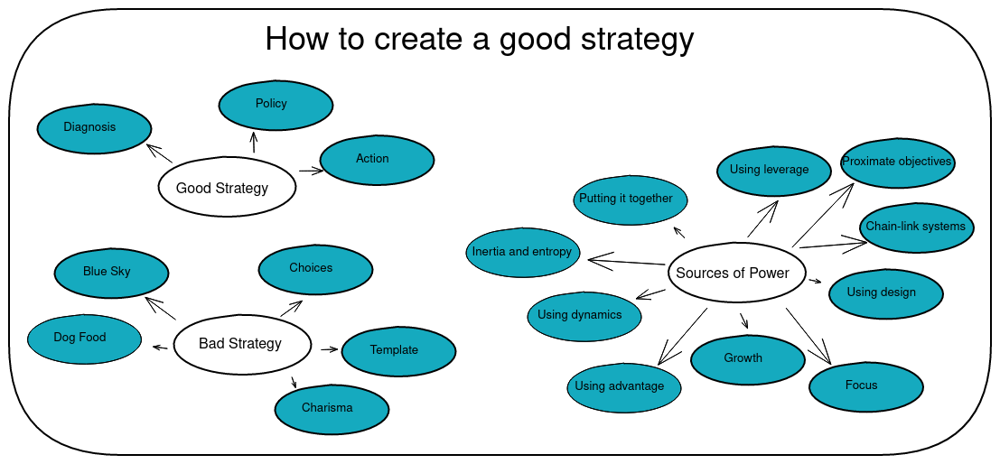

How to create a good strategy?

Document state: in progress.
Purpose: Summary of the book Good Strategy Bad Strategy.
What is a strategy?
A strategy have 3 components: diagnosis, guiding policy, and coherent action.
Diagnosis - what's the nature of the problem?
Policy - our basic approach to solve the problem.
Action - implementation details of the policy.
What is a good strategy?
Two aspects of a good strategy:
- A good strategy creates strength and coordinates policy and actions.
- The creation of new strength through subtle shifts in viewpoints.
Advantages such as being a first mover, scale, scope, network effects, reputation, patents, brands, and many others are useful but they doesn't make a strategy good.
Examples
Why are 40% of students in LA are dropping out? let's hire better teachers. lets buy better books. is this the problem?
Why did Greece borrowed more money than they can pay back? Mistake? Didn't do the math? Did they anticipate growth than never happened?
Why would anyone lend them money? The problem won't be solved by bailing out the banks or Greece. It's a systemic problem.
Table of Contents:
Part 1: Good and bad strategy
- Chapter 1: Good strategy is unexpected
- Chapter 2: Discovering power
- Chapter 3: Bad strategy
- Chapter 4: Why so much bad strategy?
- Chapter 5: The kernel of good strategy
Part 2: Sources of power
- Chapter 1: Using leverage
- Chapter 2: Proximate objectives
- Chapter 3: Chain-link systems
- Chapter 4: Using design
- Chapter 5: Focus
- Chapter 6: Growth
- Chapter 7: Using advantage
- Chapter 8: Using dynamics
- Chapter 9: Inertia and entropy
- Chapter 10: Putting it together
Part 3: Thinking like a strategist
- Chapter 1: The science of strategy
- Chapter 2: Using your head
- Chapter 3: Keeping your head.